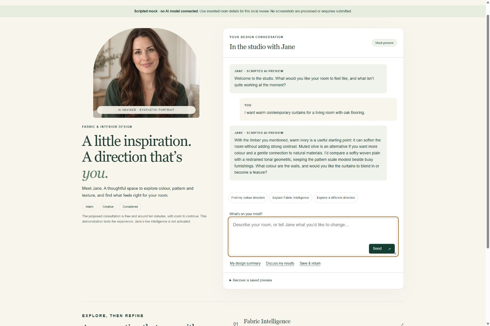
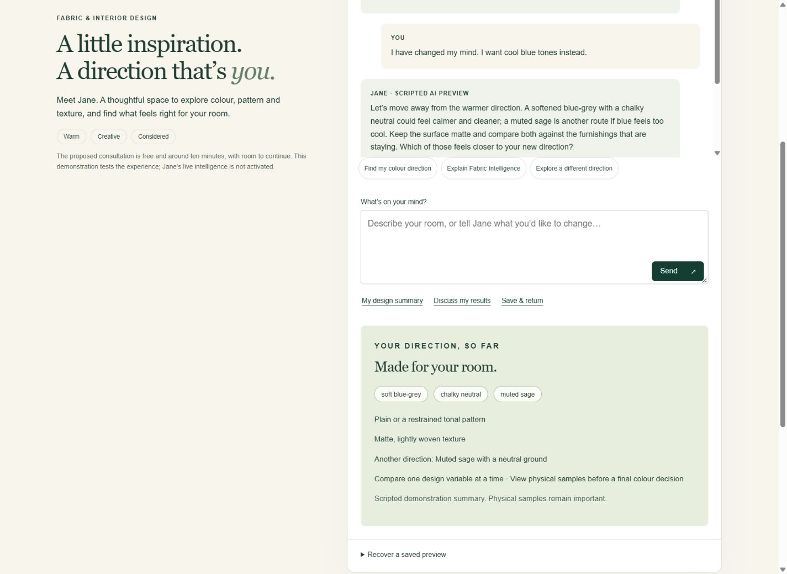

In the studio with Jane
Private development evidence · 9 October 2026 · Scripted mock, no live AI model.
Desktop consultation

Mobile conversation and explicit handoff
A direction refined together

All five responsive widths
Browser emulation only. Physical iPhone, touch, real screen reader and enabled reduced-motion browser verification remain pending.